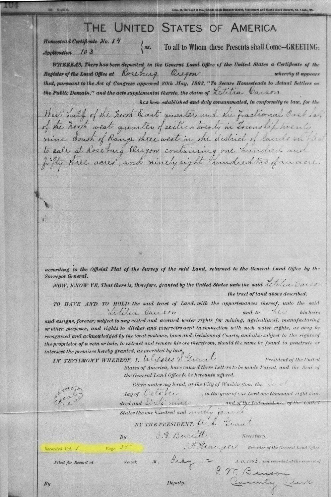
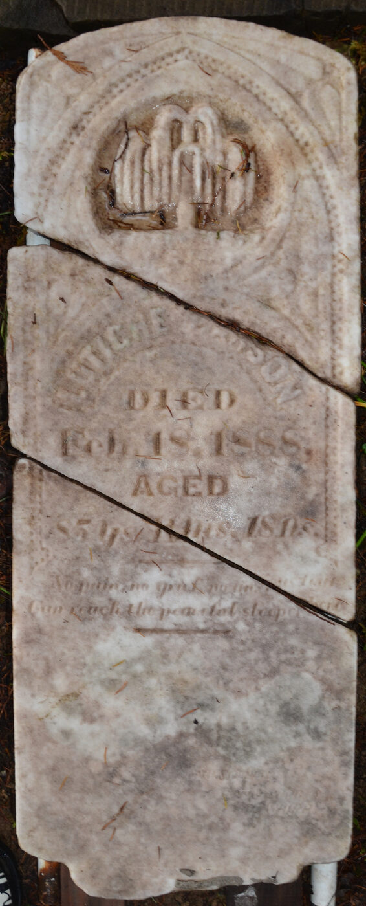
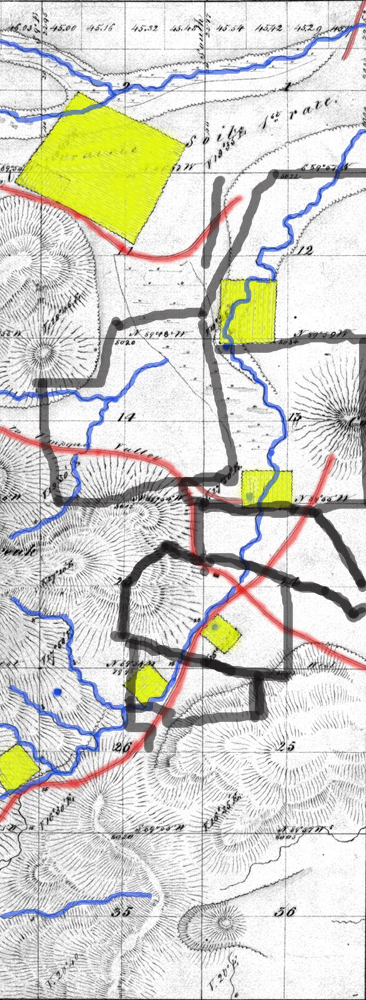
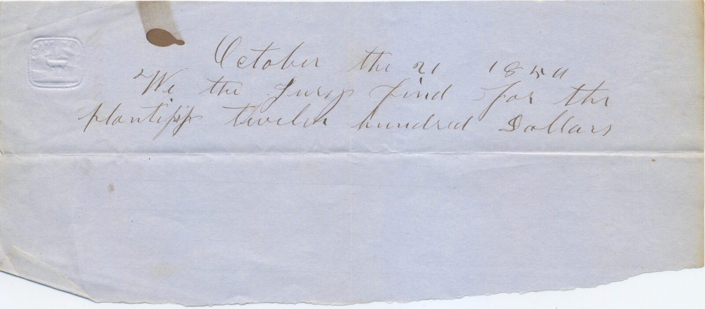
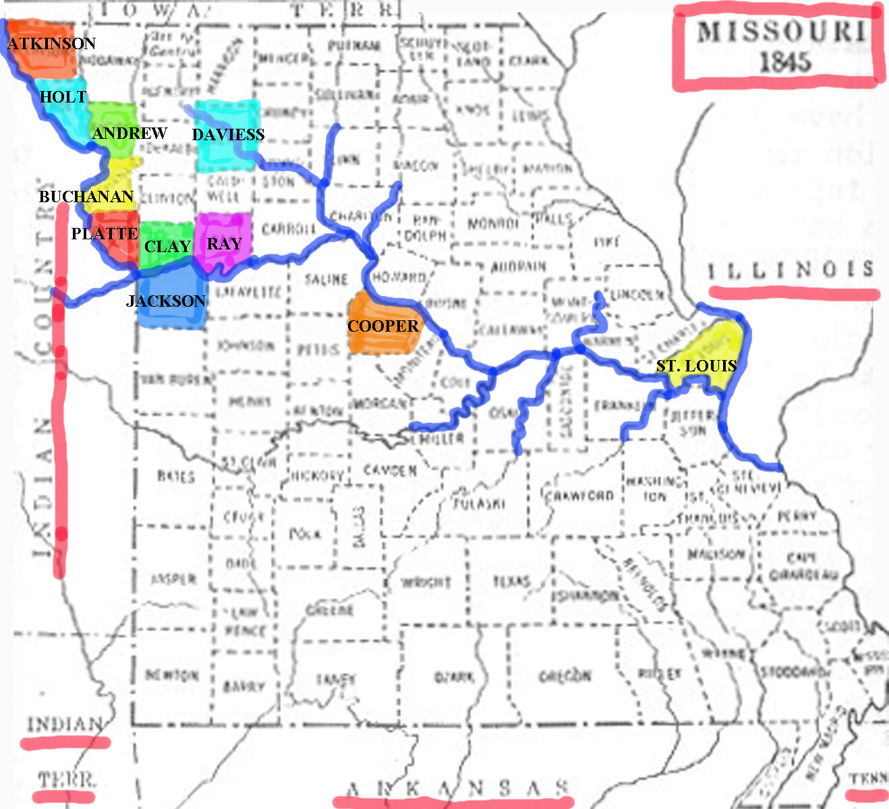

Letitia Carson — Grade-School Edition
A Black Pioneer of Oregon — Grade-School Edition. By Dr. Bob Zybach. 2026-06-20.
This is the editable Word file — open it directly in Microsoft Word. No PDF conversion needed.
A few documents and images from Dr. Zybach’s Letitia Carson archive. The full set of figures will be placed chapter by chapter in a later draft.





Letitia Carson — for Young Readers
This is a true story about a brave woman named Letitia Carson. She was born a long time ago, more than two hundred years ago. She was born into slavery, which means other people said they owned her and could buy and sell her. That was wrong, and one day it would end. Letitia crossed the whole country in a covered wagon. She had a baby girl on the trail. She worked hard, raised her children, and took care of sick neighbors. When unfair people tried to take what was hers, she stood up in a courtroom — and she won. In the end she owned her own farm, with a house and a barn and a hundred apple trees. A creek near that farm still has her name today. This is how it happened.
[ILLUSTRATION: A warm portrait of Letitia Carson as an older woman, smiling gently, standing in front of a log house with a creek and rolling green hills behind her.]
Chapter 1. Kentucky
Letitia Carson was born in a place called Kentucky. This was a long time ago, around the year 1818. We do not know the exact day. We do not even know her parents’ names. That makes us sad. But it is true, and we should tell the truth.
Letitia was born into slavery. Slavery was a cruel thing. It meant that some people said they owned other people. They could make them work for no pay. They could even buy them and sell them, like you might buy or sell a horse or a wagon. This was very wrong. Many, many people of African descent, like Letitia, were held this way in Kentucky back then.
We do not know much about Letitia as a little girl. So we have to imagine, using what we know about that time and place.
Most likely, Letitia worked in a house. She may have helped cook the meals. She may have washed the clothes. She may have milked the cows and worked in the garden. She may have helped care for little children. She learned to do many things, and she did them well. We can tell, because later in her life she could do all of these things and more.
Even with all this hard work, the people who were enslaved found small bits of happiness. On Saturday nights and on Sundays, they had a little time of their own. They sang songs. They clapped their hands and stomped their feet to make music when they had no drums. They went to church. Letitia was probably a churchgoing woman all her life.
When Letitia was a young woman, she was taken far away from Kentucky. She was moved west to a place called Missouri. We do not know exactly how. Maybe she was sold. Maybe the family that owned her moved and took her along. This happened to thousands and thousands of people back then. It was a terrible thing to be taken away from your home.
By the time Letitia was a grown woman, she was living in Missouri. There she met a man named David Carson. And that is where her story really begins — on a road heading west, to a new and faraway land.
[ILLUSTRATION: A young Letitia in a simple dress working in a sunny kitchen garden in Kentucky, with green hills in the distance.]
Chapter 2. Ireland
Now let us meet the man Letitia traveled west with. His name was David Carson. To understand David, we have to travel all the way across the ocean, to a green island called Ireland.
David was born in Ireland in the year 1800. He grew up in the northern part of the island, in a place called County Antrim. His family were farmers. They were part of a group of people called the Scotch-Irish. Their families had come to Ireland from Scotland many years before.
Life in Ireland could be hard. The land belonged to rich landlords, and they kept asking the farmers for more and more money to rent it. Many families could not pay. The weather could be cold, and sometimes the crops failed and there was not enough food.
Many farm families spun thread and wove cloth in their own cottages. This cloth was called linen, and it was made from a plant called flax. Selling linen was one way a family could earn a little money.
But many people in Ireland decided they had had enough. They wanted a better life. So they got on ships and sailed across the wide ocean to America. They had heard there was land in America — lots of it — and a chance to start fresh.
David’s family was one of these families. In the year 1818, when David was about eighteen years old, the Carsons left Ireland for good. They sailed to America. They settled in the mountains of North Carolina, far from any city.
David’s brothers and sister stayed in those mountains and built their farms. But David was different. David liked to keep moving. People who knew him later called him restless. He did not want to settle down in one spot.
So David kept traveling west. He went farther and farther, looking for new land and a new start. His travels would take him all the way to Missouri — and that is where he would meet Letitia.
[ILLUSTRATION: A tall sailing ship leaving a green Irish coast, with the Carson family standing at the rail looking out toward the open sea.]
Chapter 3. Missouri
David Carson traveled west until he came to Missouri. He stopped in a corner of Missouri called Platte County. The land there was good for farming. At last, David decided to stay for a while.
David worked hard and did well. He bought a farm. He bought a lot in a new town. He even loaned money to his neighbors when they needed it. He hauled goods up and down the big Missouri River in boats. David was good with money.
In Missouri, just like in Kentucky, many people were held in slavery. The farmers there grew a crop called hemp, which was used to make rope. Cleaning hemp was very hard work, and the farmers forced enslaved people to do it. This was wrong, the same way it was wrong everywhere.
It was in Missouri that David Carson and Letitia came to know each other. By Christmas of the year 1844, they were living together as a family. Soon Letitia was going to have a baby.
But there was a big problem. Missouri was a place where slavery was allowed. The laws there were very unfair to Black people. If Letitia stayed in Missouri, she might be in danger. She could be taken away. Her new baby might not be free.
David had to make a choice too. He had just become a citizen of the United States. He had heard about a faraway land called Oregon, far to the west. People said there was free land in Oregon — and that Oregon did not allow slavery.
For Letitia, leaving Missouri meant a chance at freedom. For her child, it meant a chance to be born free.
So they made a big and brave decision. In the spring of 1845, David and Letitia packed up. They left Missouri behind. They joined a long line of wagons heading west, toward Oregon. It was the start of a very long trip — over two thousand miles. And Letitia would have her baby along the way.
[ILLUSTRATION: A busy Missouri riverfront in spring, with covered wagons gathering and David and Letitia loading their wagon for the journey west.]
Chapter 4. The Oregon Trail
In the spring of 1845, David and Letitia set out on the Oregon Trail. The Oregon Trail was a long, long road that went all the way across the country. It took about six months to travel it. That is half a year!
They did not travel alone. They went with hundreds of other families in covered wagons. The wagons rolled along in a long line, day after day. There were oxen pulling the wagons. There were cows and horses too. There were even teachers, preachers, and fiddle players in the group. At night, when the day’s walking was done, people played music and danced by the fire.
The trip was hard. The families crossed wide, grassy plains. They saw huge herds of buffalo. They crossed rivers. They faced big thunderstorms with thunder and hail. Letitia walked and worked the whole way, even though she was going to have a baby very soon.
Then came a wonderful day. On June 9, 1845, while they were traveling along a river, Letitia had her baby. It was a little girl. They named her Martha. Now the family had a new little member, born free under the open sky.
There was a special reason this mattered so much. Because Martha was born on free soil, away from Missouri, she was born a free child. She would never belong to anyone. She was her own person from her very first breath.
The trail kept going, over mountains and through dry country. Near the end, the families had to choose a path. Some chose a shortcut across the desert. But that shortcut went terribly wrong. The people who took it ran out of water and got lost. Many suffered.
David made a wise choice. He did not take the shortcut. He kept the family on the safer road. Because of that good decision, Letitia and baby Martha stayed safe.
At last, late in the year, the family reached the green Willamette Valley in Oregon. They had crossed the whole country. They were tired, but they were healthy, and they were together. A new life was waiting for them.
[ILLUSTRATION: A long line of covered wagons crossing a wide green plain at sunset, with Letitia holding her new baby beside one of the wagons.]
Chapter 5. Soap Creek
When the Carson family reached Oregon, they needed a place to call home. David found a beautiful spot in a valley. A stream called Soap Creek ran through it. There was a cool spring of fresh water, tall oak trees, and grassy fields that were perfect for cattle.
David picked this land in December of 1845. He was the very first settler to claim land in that whole part of Oregon. That made the Carsons the first family there. They built a cabin near the spring, and they began to make a farm.
Soon other families came and settled nearby. They became neighbors. Some of them had crossed the Oregon Trail in the same year as the Carsons. The valley filled up with people, farms, and animals.
But here is something unfair. The laws of Oregon back then said that only white men could own land. Because Letitia was a Black woman, she was not allowed to own the farm in her own name. So the land was all in David’s name. While David was alive, this did not seem to matter. The family just lived and farmed like everyone else. But one day, this unfair rule would cause big trouble.
The Carsons worked hard, and their farm did well. They raised cattle and hogs. They planted crops. They built fences. In the year 1849, Letitia had a second baby — a boy. They named him Adam, though everyone soon called him Jack. He was the first Black child born in that whole part of Oregon.
The neighbors came to like and respect Letitia. They gave her a friendly nickname. They called her “Aunt Tish.” They called David “Uncle Davey.” Even though the law said Letitia should not even be in Oregon, her neighbors treated her as one of their own — an “Old Oregonian,” which was a name of honor for the first settlers.
For seven happy years, the Carson family farmed at Soap Creek. The children grew. The farm grew. Life was good.
But it would not stay that way. In the fall of 1852, David Carson got sick. After only a few days, he died. Suddenly Letitia was alone with two small children — and the unfair laws of Oregon were about to make her life very hard.
[ILLUSTRATION: The Carson family’s log cabin in a green valley by a creek, with cattle grazing, oak trees, and children playing near a fresh-water spring.]
Chapter 6. The Carson Estate
When David Carson died, he left behind a good farm, a herd of cattle, some hogs, a wagon, and a little money. He also left behind Letitia and their two children, Martha and Adam.
You would think the farm and the animals should go to Letitia and the children. They had worked for all of it. They lived there. It was their home. But the unfair laws of Oregon did not see it that way.
Because Letitia was a Black woman, the law did not count her as David’s wife. And it did not count her children as his children who could inherit. It was as if, on paper, they were not even there. This was very wrong, and it was very sad.
When someone died back then, the court picked a person to take charge of everything they owned. The court picked a neighbor named Greenberry Smith. He was now in charge of the whole farm and all the animals.
Greenberry Smith made a list of everything David had owned. Then he held a big sale, called an auction. At an auction, people come and buy things. The neighbors all came. One by one, they bought the Carson family’s cattle, their tools, their dishes, even David’s clothes and the family Bible. The whole home was sold off, piece by piece.
Now here is the part that will surprise you. Letitia had to come to the auction and buy back her own things — with her own money! She was not given them. She had to pay for them, just like a stranger.
So that is what she did. With great courage, Letitia bought back the things her family needed most to survive. She bought a washtub. She bought a big iron pot and a skillet. She bought some plates. She bought a bed and blankets. And she bought two cows and a calf, so her children would have milk.
For all of this, Letitia paid one hundred and four dollars and eighty-seven cents. It was nearly all the money she had.
After the sale, the farm itself was sold to another man. Letitia had no home left. So she gathered her two children and her few things, and she left the valley where she had been the very first settler. She walked away with a washtub and a milk cow.
It seemed like Letitia had lost everything. But Letitia Carson was not done. She had something important: she was free. And she was not going to let the unfairness stand. She had a plan.
[ILLUSTRATION: Letitia at the outdoor auction, standing tall and dignified among the neighbors, holding back tears as she buys back her own iron pot and a cow.]
Chapter 7. Carson v. Smith
Letitia Carson had been treated unfairly. The man in charge of David’s farm, Greenberry Smith, had sold off everything. Letitia got nothing, even though she had worked on that farm for seven years.
Most people in Letitia’s place would have given up. They would have thought, “There is nothing I can do.” But Letitia was brave and strong. She decided to do something almost no one like her had ever done. She decided to go to court.
Letitia found a lawyer to help her. Then she did a daring thing. She took Greenberry Smith to court — not once, but two times.
The first time, she said this: “I worked hard on that farm for years and years. I should be paid for my work.” That was fair. A person who works should be paid.
The second time, she said this: “Some of those cattle were mine. I bought my first cow with my own money on the trip west. All the other cattle came from her. They belonged to me, and they were sold without my say-so.”
This took real courage. Remember, the laws of Oregon were very unfair to Black people at that time. Some people in Oregon did not even want Black people to live there at all. For a Black woman to stand up in court against a white man was a very big and very brave thing to do.
Greenberry Smith fought back hard. He even claimed that Letitia had been a slave the whole time, so she could not own anything or be paid anything. But that was not true, and he could not prove it.
A group of twelve men, called a jury, listened to everything. They had to decide who was right. And do you know what they decided? Both times, the jury decided in Letitia’s favor!
The jury said Letitia should be paid for her work. And the jury said the cattle were hers. To decide this, the jury had to agree that Letitia was a free woman with rights — and they did.
In the end, the court ordered that Letitia be paid. She received seven hundred and seventy-eight dollars and eighty cents. That was a lot of money back then.
Think about how amazing this was. A woman who had been born a slave, who could not even read or write, stood up in a courtroom — and won. Twice. She showed everyone that she was a free person, and that her hard work mattered.
[ILLUSTRATION: Letitia standing proud and calm in a frontier courtroom as the jury announces its decision in her favor, her lawyer at her side.]
Chapter 8. Cow Creek
After Letitia lost her home at Soap Creek, she needed a new place to live. So she traveled south with her young son Jack. They went to a valley called Cow Creek, in southern Oregon. (Her daughter Martha may have stayed nearby with another family to help out and go to school.)
Letitia came to live with a family named the Elliffs. Their home sat right beside the busiest road in the whole area. The road led to a famous, scary stretch called the Canyon. The Canyon was a narrow, rocky path where travelers had to cross a creek over and over again. It was the hardest part of the whole journey for the wagons.
Because the Elliff home was right at the edge of the Canyon, lots of travelers stopped there. They needed food, rest, and a place for their animals. There was always work to do. And Letitia could do all of it. She could cook. She could keep house. She could handle cattle. And she had a very special skill: she helped bring babies into the world. A person who does this is called a midwife.
Letitia became the midwife for the whole community. When a baby was going to be born, the families called for “Aunt Tish.” In the fall of 1854, she helped deliver the Elliffs’ first baby, a little girl named Alice. People trusted Letitia and were glad to have her near.
There is a famous story about Letitia from this time. One day, the men were away, and Letitia was alone with the women and children. Some rough men rode up and started to act mean and scary. But Letitia was not afraid. She stepped out, strong and bold, and made the men leave. She protected the women and the little ones. People told that story for more than a hundred years.
These were hard years in the valley. There was fighting between the new settlers and the Native people who had lived on the land for a very long time. The settlers had taken the Native people’s land and food, and that led to a sad and terrible war. To stay safe, the families went to live inside a fort for several months. Letitia and Jack went with the Elliff family to the fort. Sadly, the Elliffs’ baby Alice, whom Letitia had helped bring into the world, died during that hard time.
Through all of this — the hard work, the danger, the war — Letitia kept going. She kept her son safe. She helped her neighbors. She earned the money the court had said was hers. And all the while, she was getting ready for the next big step: she was going to get a farm of her very own.
[ILLUSTRATION: Letitia as a respected midwife at the Elliff roadhouse, greeting travelers and holding a newborn baby, with the steep walls of the Canyon in the background.]
Chapter 9. Letitia Creek
For most of her life, the law had been used against Letitia. It had taken her home and her farm. But now, at last, the law was about to help her.
The United States made a new law called the Homestead Act. It was a wonderful idea. The law said that almost any grown-up could get a piece of land from the government — for free! You did not have to be rich. You did not have to be a man. The law even said that people who had been freed from slavery could do it, and women could do it too.
Here is how it worked. First, you went to the land office and filed a paper to claim your land. Then you had to live on the land and work it for five whole years. You had to build a house and grow things. After five years, if you had done all the work, the land was yours forever.
Letitia decided to do it. In June of 1863, she went to the land office in a town called Roseburg. She filed her claim for a piece of land on South Myrtle Creek. It was beautiful country, with a creek running through it. This time, the land would be hers, in her own name.
Then Letitia got to work. She built a log house — a good, comfortable home with two doors and two windows. She built a barn for her animals. She built a smokehouse to keep meat through the winter. And she planted about one hundred fruit trees! When someone plants a hundred trees, you know they mean to stay forever. She also raised a big herd of cattle. The cattle paid her taxes and kept food on the table.
In June of 1868, after five years of hard work, Letitia went back to the land office. Two neighbors came with her. They swore that everything was true — that Letitia had lived on the land and worked it for five years. And so the land became hers.
Then, on October 1, 1869, the United States sent Letitia the final paper, called a patent. It was signed in the name of the President himself. The paper said the land belonged to Letitia Carson “and to her heirs and assigns, forever.”
And here is something truly special. On that very day, the United States gave out its very first homestead papers ever — only seventy-one of them in all of Oregon. Letitia Carson was one of those first seventy-one. And she was the only Black woman among them. She was likely the first Black person in all of Oregon to earn a homestead this way.
Think of how far she had come. She was born a slave in Kentucky. She had lost her first home. And now she owned her own farm, free and clear, with her name on the paper.
The creek that ran through her land is still there today. People call it Letitia Creek — named after “Aunt Tish” Carson, the brave woman who earned the land it runs through.
[ILLUSTRATION: Letitia standing proudly in front of her own log house and orchard, holding the homestead patent, with a creek winding through her green farm.]
Chapter 10. Umatilla
Letitia Carson lived many happy years on her own farm. Her family grew bigger and bigger. Her daughter Martha got married to a kind man named Narcisse Lavadour. Together they had many children. That made Letitia a grandmother many times over!
Letitia’s family was special in a wonderful way. Her grandchildren had grandparents from far-off places all over the world. One grandmother was Letitia, who came from Africa and Kentucky. One grandfather, David, came from Ireland. Another grandmother was a Native woman of the Walla Walla people, from the high country of the Northwest. Another grandfather came from Canada. Letitia’s grandchildren carried the blood of three different continents. What a special family!
For many years, the children lived close to Grandma Tish. They could visit her farm. It was the only home they had ever known.
But then something happened that took the family far away. The United States passed a new law about land out east, near a place called Umatilla. The law let Native families claim pieces of land there. Martha’s husband Narcisse had Native family roots in that country. So in the summer of 1886, Narcisse and Martha packed up. They took their children and moved more than four hundred miles to the east.
This must have been very hard for Letitia. She stood on her farm and watched her daughter, her grandchildren, and her little great-grandchild get ready to leave. They were going so far away that she would probably never see them again. After they left, only her son Jack lived nearby. Letitia was about seventy years old by then.
Letitia had lived a long and amazing life. She had crossed the whole country in a wagon. She had won in court two times. She had built her own farm and earned her own land. She had outlived almost everyone she started out with.
Letitia Carson died on February 18, 1888. She is buried on a quiet hill above the creek that carries her name.
For many years, hardly anyone told her story. But she was never truly forgotten. Her family remembered her. The creek kept her name. And now you know her story too.
Letitia Carson was born with nothing of her own — not even her freedom. But by the end of her life, she had won her freedom, raised a family, helped her neighbors, and owned her own land. A creek, the maps, and even the soil carry her name. She showed the whole world how brave and strong one person can be. And that is a story worth remembering forever.
[ILLUSTRATION: An older Letitia waving goodbye to her family’s wagons as they head east toward the sunrise, with her own farm and Letitia Creek behind her.]